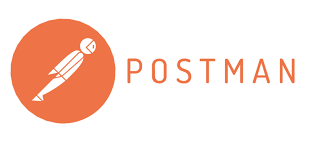
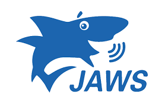
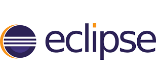
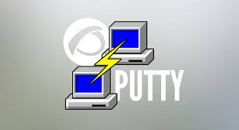

Senior QA Engineer with 8+ years of experience across Agile and Waterfall projects in the banking and insurance domains. I specialize in functional, API, and regression testing, with hands-on experience in accessibility and security testing. I'm also certified in GitHub Copilot and Claude AI, and I use both to speed up test design and improve coverage. I'm open to QA opportunities where quality is a shared goal.
My testing career began with structured training at QSpiders. Since then I've built deep experience in functional, integration, API, regression, and user acceptance testing, writing clear test cases and defect reports that developers can act on quickly.
I automate with Java and Selenium, and I'm comfortable working alongside automation teams to grow regression coverage. I also use GitHub Copilot and Claude AI to draft test scenarios and speed up scripting.
I test with screen readers such as JAWS and NVDA to check that applications work for all users, and I use Burp Suite for basic security testing.

Postman API testing
JAWS Accessibility
Eclipse Java IDE
PuTTY Remote access2021 – Present
2018 – 2021